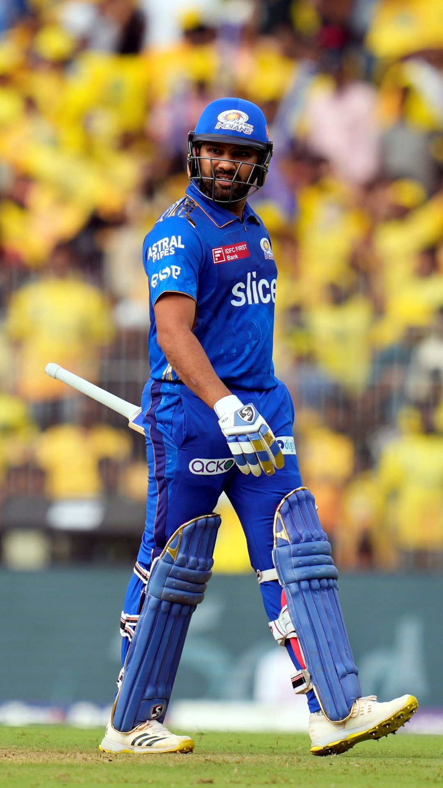

Rohit shrma

Test debut (cap 280): 6 November 2013 against West Indies
ODI debut (cap 168): 23 June 2007 against Ireland
T20I debut (cap 17): 19 September 2007 against England
ODI runs:9,115 (29 Centuries)
Test Match Runs: 2141 (6 centuries)
T20I Runs: 2713 (4 centuries)
Sharma Awards
1. ICC ODI Player of the Year (2019)
2. ICC ODI Team of the Year (2014 (12th man), 2016, 2017, 2018, 2019)
3. Arjuna Award (2015)
Key Records of Rohit Sharma:-
1. Rohit Sharma is the first and the only batsman in the world to score four T20I centuries
.
2. Rohit Sharma is the first and the only batsman in the world to score 3 double centuries in the ODI so far.
.
3. He has the record of the highest individual score (264 runs) in the ODI format.
.
4. Rohit has a record of most number of sixes (i.e. 120) by an Indian batsman in T20Is format.
5. After Suresh Raina, Rohit was the only batsman who scored at least a century in each of the three forms of International Cricket. Now KL Rahul has also achieved this feat.
.
6. Rohit Sharma is the only batsman who scored 8 innings of 150+ in ODIs.
.
Sharma (born April 30, 1987, Bansod, India) is an Indian international cricketer and the current captain of the Indian cricket team in the Test and One-Day International (ODI) formats. Sharma was also the captain of India’s Twenty20 International team until he announced his retirement on June 29, 2024, after leading the Indian side to its T20I World Cup victory. He captained the Mumbai Indians, a franchise team in the Indian Premier League (IPL), for 10 years and led them to five titles. Sharma is known for his batting prowess and is nicknamed “Hitman” by his fans. He is also an occasional off-spinner.
Sharma is the only player to have scored three double hundreds in ODI cricket; no other player has scored even two. He also holds the record for most international sixes across all formats, most sixes in World Cups, and the highest individual score in an ODI. He was a member of the Indian sides that won the 2007 T20I World Cup, the 2013 ICC (International Cricket Council) Champions Trophy, and the 2024 T20I World Cup.
life and career
Sharma was born on April 30, 1987, in Bansod, Nagpur, in the state of Maharashtra, India. He first joined a cricket camp in 1999, when coach Dinesh Lad, a friend of his uncle’s, noticed his talent. Lad used to scout for talent in those days and was very impressed with the way Sharma bowled. Knowing that Sharma’s uncle would not be able to afford the fees for the school where Lad was coach, Lad convinced the school’s director to accept Sharma as a student and waive his entire fee so that he would have access to good training facilities. Sharma started off as a spinner before focusing on batting.
Sharma made his senior-level debut in a List A game in 2006, scoring an unbeaten 31 for West Zone against Central Zone in the Deodhar Trophy. His run of scores in the tournament got him picked for the India A squad, and he made his first-class debut for India Athat team against New Zealand at Darwin later in 2006, scoring 57 and 22, respectively. India achieved a 3-wicket win over New Zealand. He subsequently made his Ranji Trophy debut for Mumbai, one of the leading (and hard to break into) teams in the Indian domestic circuit, in the 2006–07 season and impressed with a double hundred while playing against Gujarat, as well as a half-century in a winning cause in the final that year. Sharma has gone on to represent Mumbai throughout his first-class career.
Indian Premier League
Sharma joined the IPL in 2008 and was signed on by the now-defunct franchise Deccan Chargers, based in Hyderabad, for $750,000 a year. He was part of the Deccan Chargers that won the second edition of the IPL in 2009. He took a hat-trick against the Mumbai Indians that year with his part-time off-spin.
In the 2011 IPL auction, Sharma joined the Mumbai Indians for $2 million and scored his first and only IPL century that year. He was appointed captain of the Mumbai Indians in 2013 and led them to five titles (2013, 2015, 2017, 2019 and 2020). He also led them to the Champions League T20 title in 2013. Sharma captained the Mumbai Indians until December 2023 and has been retained by them in all auctions since 2011. He is noted for his calm demeanor and tactical acumen on the field.
Get a Britannica Premium subscription and gain access to exclusive content.
Subscribe Now
career
Sharma’s international career kicked off with an ODI match against Ireland at Belfast in June 2007, when he took one catch but did not get a chance to bat or bowl. His T20I debut was later the same year, in the group game against England in the first T20I World Cup. Again, he didn’t get a chance to bat or bowl but took one catch, in a match remembered for Yuvraj Singh’s six sixes in an over. Sharma was Player of the Match in the quarterfinals against South Africa. He was also part of the team that won the T20I World Cup final, scoring a quick 30, the second highest score for India.
Sharma scored his first ODI half-century in November 2007 and had a run of good scores in the 2007–08 ODI series in Australia, which India won. He scored two ODI hundreds in 2010 but subsequently had a loss of form and fitness, which led to him being dropped from the eventually victorious 2011 ODI World Cup team. His loss of form continued for a couple of years, and he continued to be in and out of the team.
It was in 2013 that the captain, Mahendra Singh Dhoni, promoted Sharma as opener, a position at which he has been a success. His partnership with Shikhar Dhawan at the top of the order has yielded great results for India. He scored his first ODI double hundred against Australia the same year and followed it up with a second double hundred against Sri Lanka in 2014. The latter score of 264 remains an ODI record for highest individual score. Sharma made his Test debut in 2013, scoring 177 against West Indies in Kolkata, in Sachin Tendulkar’s farewell series. He was, however, unable to hold his position in the Test team for a few years after a run of poor scores in overseas Test matches.
In 2015 Sharma scored a T20I hundred against South Africa at Dharamshala, India, becoming the second Indian to score a hundred in all three international formats. In 2017 he scored a T20I hundred against Sri Lanka at Indore in only 35 balls, equaling David Miller’s record for the fastest T20I hundred. He was also part of the ODI World Cup team that year for the first time and scored one century as India made it to the semifinals.
Sharma batting
Rohit Sharma batting as wicketkeeper Alex Carey of Australia looks on during the ICC Cricket World Cup match between India and Australia at the Oval, London, on June 9, 2019.
In 2017, when Virat Kohli, captain on the Indian ODI team at that time, was rested, Sharma was appointed captain of the ODI team in a series against Sri Lanka. He led India to victory and scored his third ODI double hundred.
The 2019 ODI World Cup, where India made it to the semifinals, saw Sharma in a rich vein of form. He scored five centuries, the most in a single World Cup edition, and led the run charts. He was also vice captain during the tournament. The year also saw Sharma play the opening batsman role in Tests for the first time; he scored two hundreds in a match against South Africa.
Sharma was appointed vice captain of the Test team during the 2020 series in Australia and scored critical runs in a series India won. He continued to score heavily in the 2021 twin series against England. In February 2022 he was appointed captain of the Indian team in all three formats.
In the 2023 ODI World Cup, Sharma led the Indian team to a clean sweep in the league phase and, in the process, set a record for the most hundreds and the most sixes in ODI World Cup history. India went on to lose the final against Australia, after which Sharma took a break from limited-overs cricket.
Sharma led India to its second T20I World Cup victory in 2024 and scored three half-centuries in the tournament. He announced his retirement from the T20I format in a press conference soon after India won the final match against South Africa by 7 runs.
Awardsc
Sharma was awarded the Arjuna Award, India’s second highest sporting honor, by the government of India in 2015. In 2020 he was awarded the Rajiv Gandhi Khel Ratna Award (since renamed Major Dhyan Chand Khel Ratna Award), India’s highest sporting honor.
Sharma was named the ICC Men’s ODI Cricketer of the Year in 2019 and was included in the ICC Men’s ODI Team of the Year in 2014 and in each year from 2016 to 2019. He was also included in the ICC Men’s Test Team of the Year in 2021, mainly for his achievements on India’s Test tour of England that year. For the same achievements, the Wisden Cricketer’s Almanack named him one of the five Wisden Cricketers of the Year in its 2022 edition.